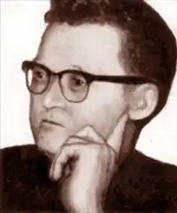
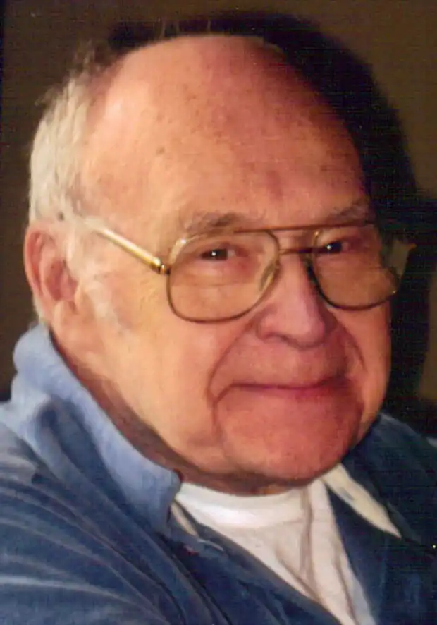

Відомий американський прозаїк, письменник-фантаст Роберт Янг (повне ім'я — Роберт Френклін Янг / Robert Franklin Young) народився 8 червня 1915 року в невеликому містечку Сільвер-Крік, штат Нью-Йорк. Тут, у власному будинку на березі озера Ері, і пройшла майже вся його життя. У роки Другої світової війни Р.Янг служив три з половиною роки на Тихоокеанському флоті. Доля кидала його на Соломонові острови, Філіппіни і навіть до Японії, але від участі в бойових діях вберегла.
Після закінчення війни майбутній письменник змінив декілька професій: працював простим робітником, машиністом, ливарником, інспектором в ливарному цеху. У свій час працював швейцаром одного з вищих навчальних закладів Буффало. Дізнавшись про цей факт в самому кінці життя Янга, американський письменник-фантаст Баррі Н. Малзберг зауважив, що якщо він був письменником, що працюють швейцаром, то він жив сумної життям, але якщо він був швейцаром, який, траплялося, писав, він жив дивно і радісно. У 1982 році Р. Янг пішов на пенсію.
Першими фантастичними книгами, які прочитав майбутній письменник, були "Люди як боги" Герберта Уеллса і романи про Тарзана Едгара Барроуза. Відсутність систематичного вищої освіти не завадило Янгу стати одним з найяскравіших представників романтично-піднесеної американської фантастики 1950-60 років минулого століття. У 1953 році Семюел Майнз, письменник-фантаст і редактор журналу "Startling Stories", опублікував в червневому номері розповідь Роберта Янга "The Black Deep Thou Wingest". Безперечною заслугою журналу є те, що він відкрив дорогу у велику літературу багатьом великим письменникам-фантастам і цей дебют не став винятком. Письменницька кар'єра Янга охоплює період понад 30 років, він видав понад сто оповідань у багатьох журналах, включаючи такі відомі, як "The Saturday Evening Post" і "The Magazine of Fantasy and Science Fiction", в останньому він був завжди бажаним автором. Успіх і популярність Роберту Янгу принесли збірники його повістей і оповідань "The Worlds of Robert F.Young", що вийшов в 1965 році і надалі неодноразово перевидавалися і "A Glass of Stars", що вийшов в 1968 році. Письменник, якого називали "поетом від наукової фантастики", знаком нашим читачам за повістю і розповідями "У вересні тридцять днів", "Зірки звуть, містер Кітс", "Зрубати дерево", "Механічний фіговий листок", "Дівчина-кульбаба", "На річці", "Хмільний ґрунт" і іншим, які друкувалися в газетах, журналах, збірниках і антологіях. Одним з кращих лірично-пригодницьких творів вважається повість "У початку часів", пізніше перероблена в роман "Eridahn" (1983). Роберт Янг написав трохи романів і, як вважають критики, саме тому він не був відомий широкому читачеві, як того заслуговував. Його перший роман "La Quete de la Sainte Grille", написаний в 1975 році на основі оповідання "The Quest of the Holy Grille" вийшов тільки французькою мовою. У роману "The Last Yggdrasil" цікавіша доля: перероблений з повісті "Зрубати дерево" в 1982 році він сподобався читачам і зацікавив студію "Уолт Дісней", яка виплатила аванс за право зйомок фільму за оригінальним сюжетом, але робота над фільмом не відбулася. Роберт Янг помер 22 червня 1986 року на сімдесят другому році життя. Він продовжував писати навіть у день своєї смерті.